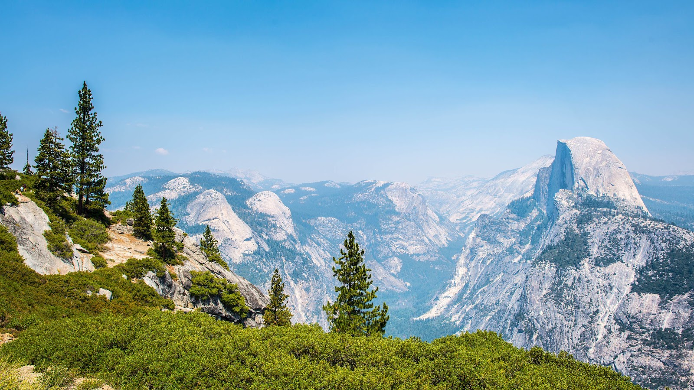

ارشدني
وصف الموقع : مرحباً بك في ارشدني، وجهتك الإلكترونية المثلى لاستكشاف أروع الوجهات السياحية حول العالم. يقدم موقعنا دليلاً شاملاً لكل ما تحتاجه لرحلة لا تُنسى، بدءًا من معلومات مفصلة عن الوجهات الشهيرة، إلى نصائح السفر والحجوزات.
